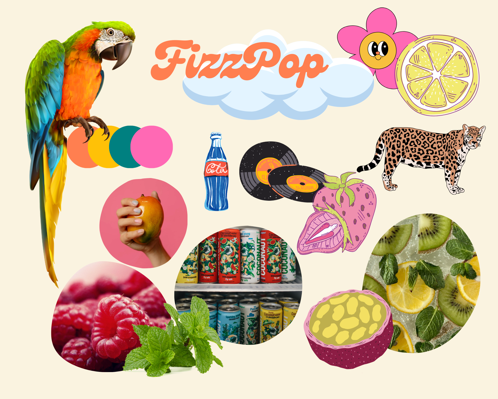
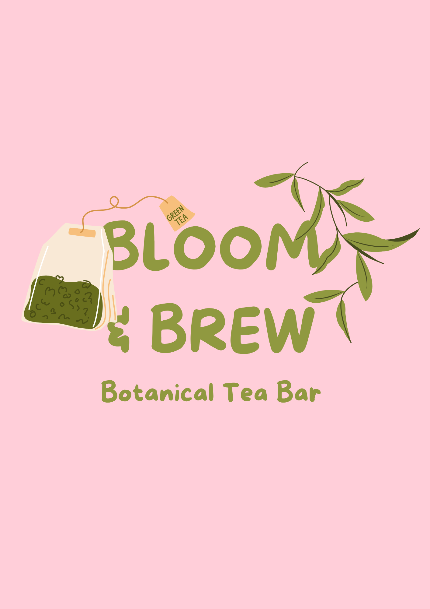
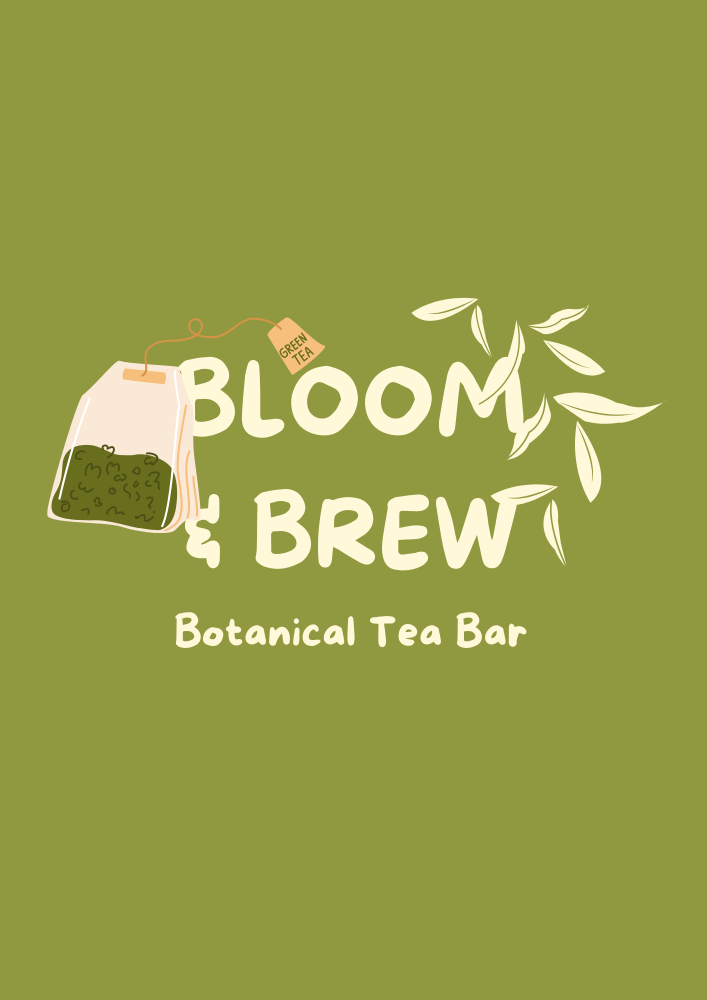

<!DOCTYPE html>
<html lang="fr">
<head>
    <meta charset="UTF-8">
    <meta name="viewport" content="width=device-width, initial-scale=1.0">
    <title>Branding Juliette Mouillac</title>
    <script async src="https://www.googletagmanager.com/gtag/js?id=G-RLG9SQFGNL"></script>
<script>
  window.dataLayer = window.dataLayer || [];
  function gtag(){dataLayer.push(arguments);}
  gtag('js', new Date());

  gtag('config', 'G-RLG9SQFGNL');
    <link rel="stylesheet" href="style.css">
    <link rel="icon" type="image/x-icon" href="logoinitiales.ico">
    <link rel="preconnect" href="https://fonts.googleapis.com">
<link rel="preconnect" href="https://fonts.gstatic.com" crossorigin>
<link href="https://fonts.googleapis.com/css2?family=Afacad:ital,wght@0,400..700;1,400..700&family=Inter:ital,opsz,wght@0,14..32,100..900;1,14..32,100..900&family=Modak&display=swap" rel="stylesheet">

</head>
<body>
    <header>
        <a href="index.html"></a>
        <nav>
            <ul>
                <li><a href="about.html">A propos</a></li>
                <li><a href="projets.html">Projets</a></li>
                <li><a href="contact.html">Contact</a></li>
            </ul>
        </nav>
    </header>
    <main>
        <h2 class="titre">Branding</h2>
        <div class="container">
            <div class="section">
                <div class="image-grid">
                    
                    
                    
                </div>
                <div class="text-part">
                    <h3 class="sous-titre" id="fizzpopbrand">Fizzpop</h3>
                    <p>Fizzpop est une <b>marque fictive</b> que j’ai développé simplement pour m’amuser avec mon petit frère !  La marque propose des <b>sodas</b> aux goûts <b>originaux</b> et <b>osés</b>, dans une <b>atmosphère colorée et fun</b>.
                    </p>
                    <p>La marque a élargi sa gamme de produits et propose des sucres pétillants et des gummies aux goûts associés à ceux des sodas. J'ai également réalisé la page d'accueil de la <a href="maquettes.html#fizzpopwire">maquette graphique de Fizzpop</a>.
                    </p>
                </div>
            </div>
            <div class="section inverted">
                <div class="big-image">
                    
                </div>
                
                <div class="content-with-images">
                    <div class="text-part">
                        <h3 class="sous-titre" id="bloombrand">Bloom & Brew</h3>
                        <p>Bloom & Brew est également un <b>projet fictif</b>. Il s’agit d’un salon de thé qui propose des produits éthiques et bio à sa clientèle.</p>
                        <p>J’ai réalisé la charte graphique sur <b>canva</b> et <b>Illustrator</b>, et la <a href="maquettes.html#bloomwire">maquette graphique</a> du site web sur <b>Figma</b>.</p>
                    </div>
                    
                    <div class="small-images">
                        
                        
                    </div>
                </div>
            </div>
        </div>
        <a href="projets.html" class="voir-plus">Retour aux projets &#129170</a>
        </main>
    <footer>
        <ul class="footer-menu">
            <li><a href="https://www.linkedin.com/in/juliette-mouillac/"></a></li>
            <li><a href="about.html">A propos</a></li>
            <li><a href="projets.html">Projets</a></li>
            <li><a href="contact.html">Contact</a></li>
        </ul>
    </footer>
</body>
</html>
